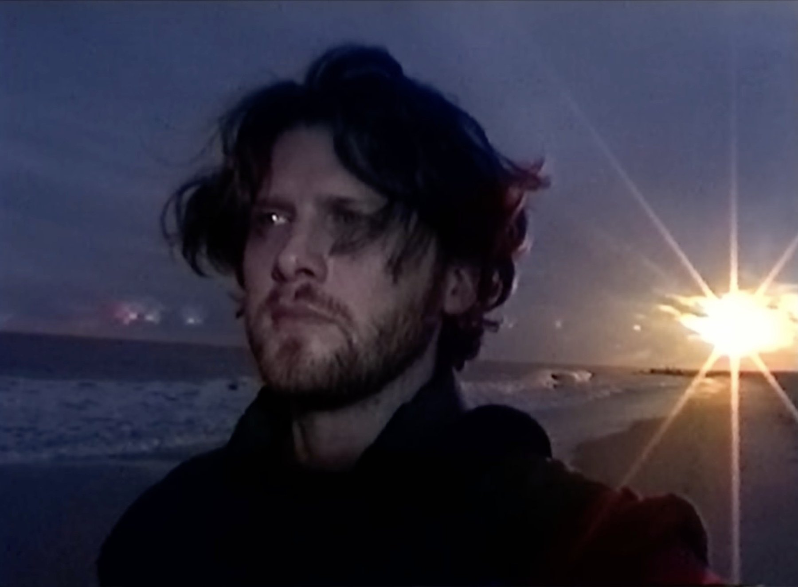
Film · Music · Editing
My name is Stefan Sendyk and I'm studying A Levels at Aloha College.
Although my other subjects are largely analytical and academically focused, I chose Media Studies because I wanted to develop a different side of my abilities. I see it as an opportunity to combine creativity with analytical thinking — something I didn't get the chance to develop during my IGCSEs — and to gain knowledge and practical experience that I hope will be valuable for my future career.
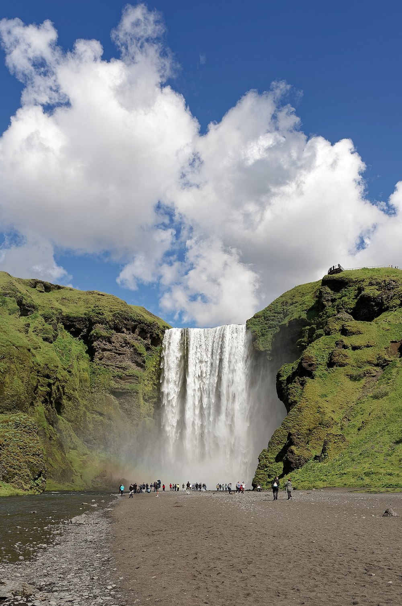
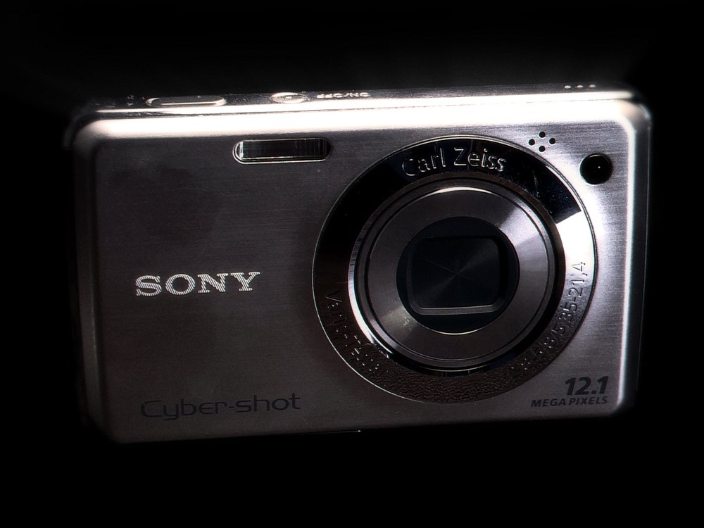
My interest in film and cinematography has been present from a young age, as it has been an important part of my family background. Being exposed to the industry through my family has given me an appreciation for the creativity, planning and collaboration that go into producing content, and has encouraged me to explore filmmaking myself.
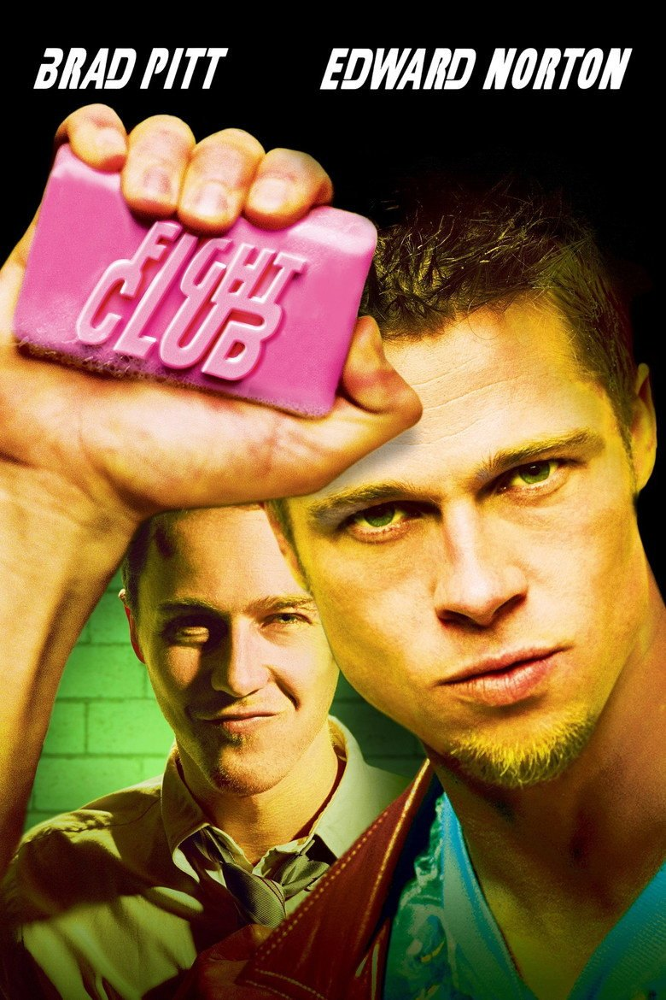
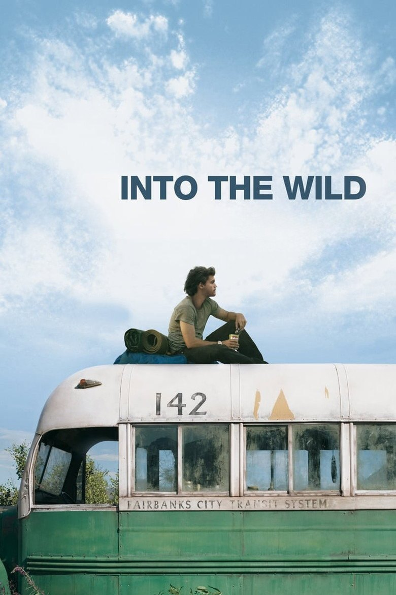
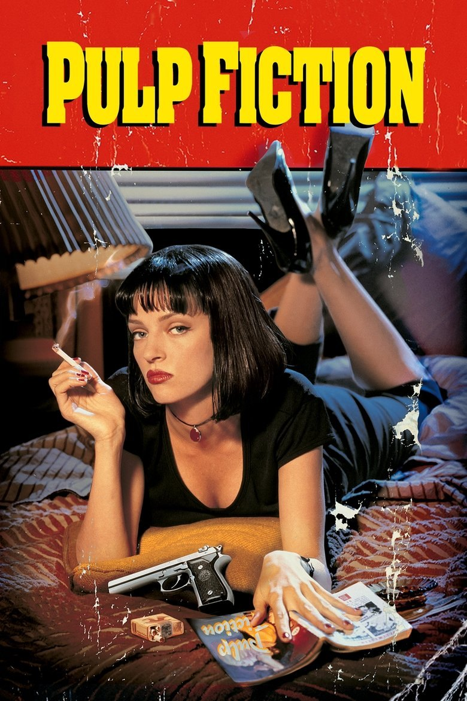
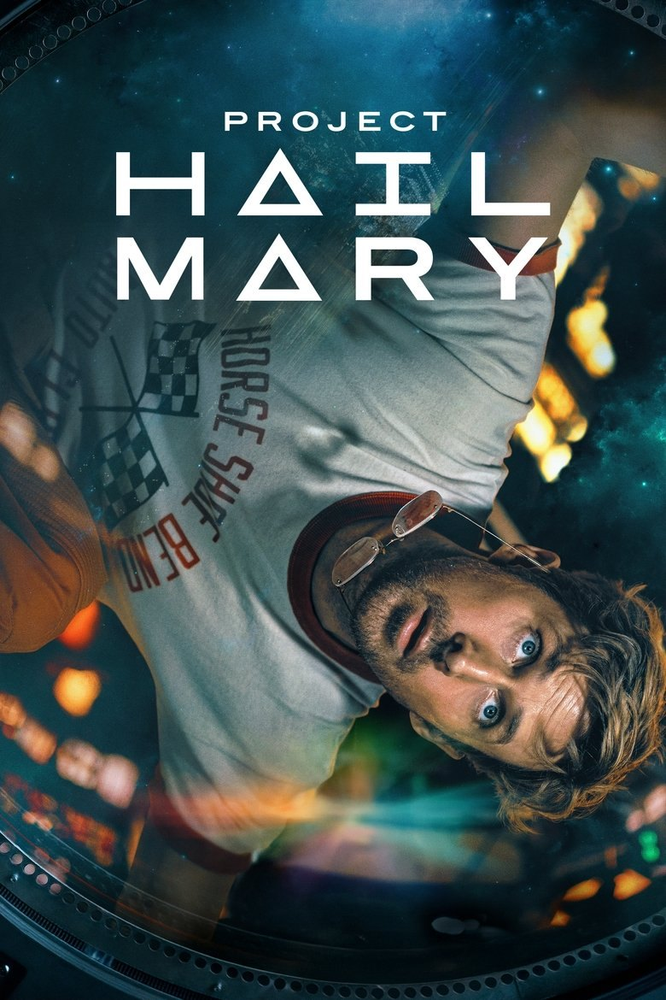
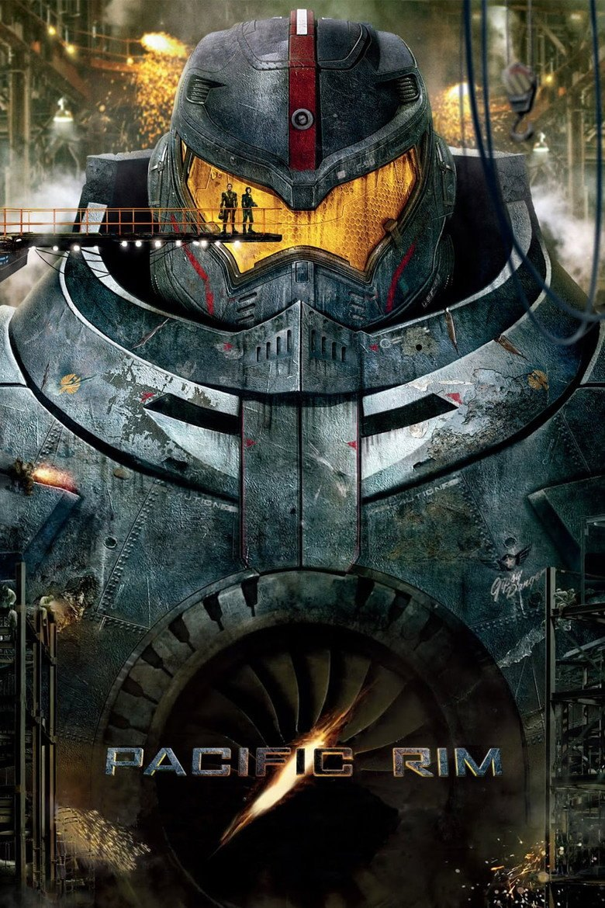
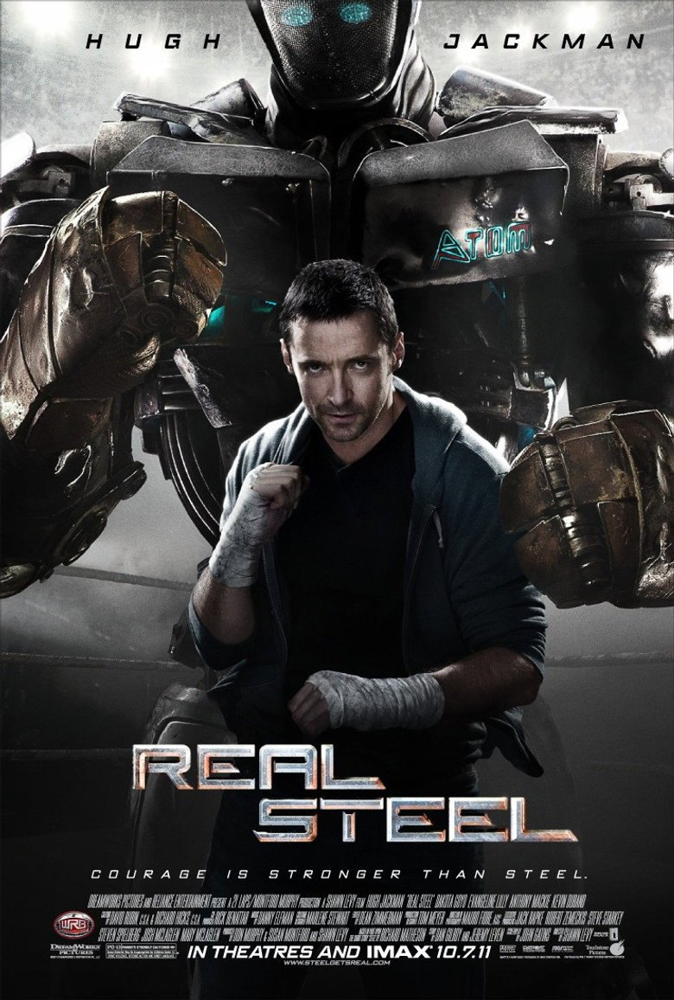
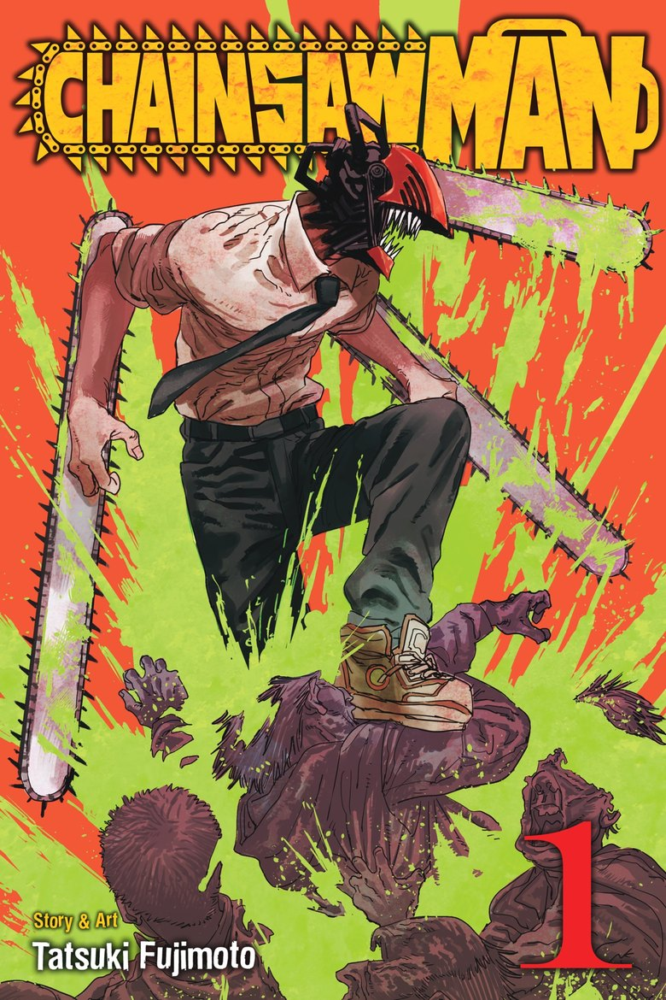
Music is another major influence on me. I completed music school back in 2023 and continue to listen to a wide range of music in my free time. This has made me particularly interested in the relationship between sound and visual media.
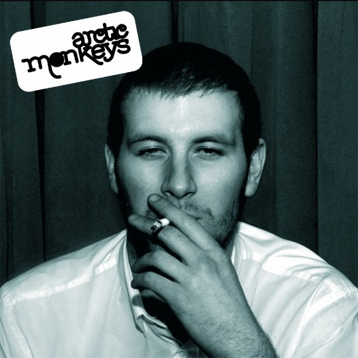
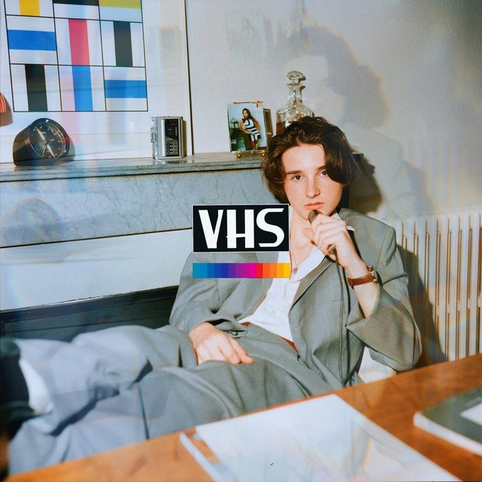
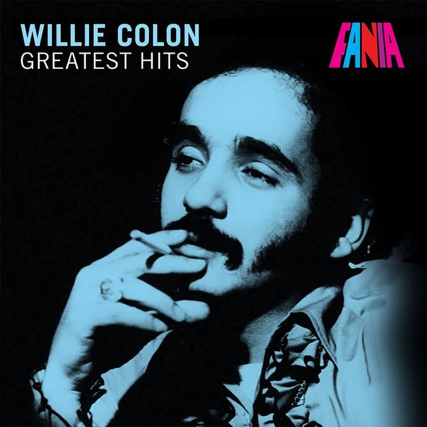
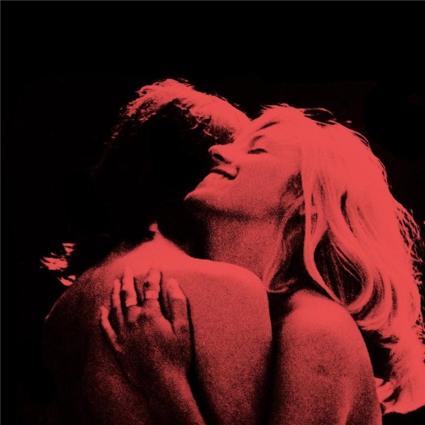
Over the past two years I have developed a strong interest in video editing. I began editing clips and scenes from different television shows and films, gradually developing my understanding of pacing, transitions, sound and visual storytelling. This hobby eventually led me to build an audience of 5,500 subscribers on TikTok.
Although I initially started editing simply because I enjoyed it, the experience taught me how creative decisions can influence an audience and how important it is to understand what makes content engaging.
I believe that my combination of analytical thinking, musical experience, interest in cinematography and practical editing experience gives me a strong foundation for Media Studies. Through this course, I hope to develop these skills further, experiment with different forms of media production and, most importantly, develop my own creative style and understanding of how media can communicate ideas to an audience.